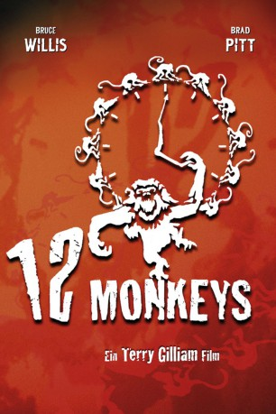

Alternativ: Twelve Monkeys
Auszeichnungen: für 2 Oscars nominiert 1 GoldenGlobes gewonnen
 
 IMDB-Wertung: 8.0 / 10
IMDB-Wertung: 8.0 / 10  Metascore:
Metascore: 
Das Jahr 2035: Die Erdoberfläche ist entvölkert, seit eine Virenepidemie die Menschheit 1996 fast gänzlich vernichtet hat. Die wenigen Überlebenden existieren in einem Unterwelt-System. Mit der Hoffnung auf ein besseres Leben schickt man den Sträfling Cole als Zeitboten ins Jahr der Katastrophe zurück, um den Ursprung der Apokalypse herauszufinden. Versehentlich gerät er zunächst ins Jahr 1990 und in eine Irrenanstalt. Dort warnt ihn der verwirrte Jeffrey vor den "12 Monkeys". Haben sie mit den Viren zu tun? Endlich im Jahr 1996, spürt Cole mit der Psychiaterin Kathryn diese Vereinigung auf und macht eine verblüffende Entdeckung...
Jahr: 1995
Dauer: 129 Minuten
FSK: 16
Land: USA Studio: Universal PicturesTonspuren: DTS - ,
Untertitel:
Auflösung: 1080p (1904×1064) Größe: 12288 MB
Genre: Mystery, Sci-Fi, Thriller
Regisseur:  Terry Gilliam
Terry Gilliam
Drehbuch: Chris Marker, David Webb Peoples, Janet Peoples
Soundtrack: Paul Buckmaster
Darsteller:
 Bruce Willis als James Cole
Bruce Willis als James Cole Jon Seda als Jose
Jon Seda als Jose Vernon Campbell als Tiny
Vernon Campbell als Tiny Simon Jones als Zoologist
Simon Jones als Zoologist Bill Raymond als Microbiologist
Bill Raymond als Microbiologist Madeleine Stowe als Kathryn Railly
Madeleine Stowe als Kathryn Railly Joey Perillo als Detective Franki
Joey Perillo als Detective Franki Brad Pitt als Jeffrey Goines
Brad Pitt als Jeffrey Goines Frederick Strother als L.J. Washington
Frederick Strother als L.J. Washington Aaron Michael Lacey als WWI Sergeant
Aaron Michael Lacey als WWI Sergeant David Morse als Dr. Peters
David Morse als Dr. Peters Charles Techman als Professor
Charles Techman als Professor Chuck Jeffreys als Thug No. 2
Chuck Jeffreys als Thug No. 2 LisaGay Hamilton als Teddy
LisaGay Hamilton als Teddy Matt Ross als Bee
Matt Ross als Bee Christopher Plummer als Dr. Goines
Christopher Plummer als Dr. Goines Christopher Meloni als Lt. Halperin
Christopher Meloni als Lt. Halperin Joseph McKenna als Wallace
Joseph McKenna als Wallace Annie Golden als Woman Cabbie
Annie Golden als Woman Cabbie Stephen Bridgewater als Airport Detective
Stephen Bridgewater als Airport Detective Ray Huffman als Plump Businessman
Ray Huffman als Plump Businessman C.J. Byrnes als Psychiatric Patient , uncredited
C.J. Byrnes als Psychiatric Patient , uncredited Joe Gerety als Sprayer , uncredited
Joe Gerety als Sprayer , uncredited Raymond Mamrak als Travler , uncredited
Raymond Mamrak als Travler , uncreditedDatei: X:\1995\12 Monkeys (1995, FSK16, 1904x1064).mkv seit 02.02.2015
Festplatte: HD 1992-1995
 Es gibt insgesamt 85 Filme in der Gruppe '1995'
Es gibt insgesamt 85 Filme in der Gruppe '1995'